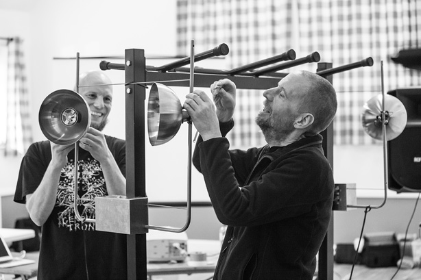

We are nearly at the end of Season #2 of If Wet and we wanted to let you know our plans, as they stand.
In the short term we have one final event; our 20th! We are very much looking forward to welcoming Rosanne Robertson to the hall on Sunday the 30th of November. Last year our final event was a much extended affair with many performances and the like. This year the loose plan is a standard If Wet, with a bit more emphasis on performance than usual, and then off to the pub! We will add more details about this event when we put up a preview in due course.
The other thing our last event in 2013 served as was a fundraiser. It was a great success and – topped up by entry fees and sales of grub and tat – it has paid our visiting artists throughout this season. We are very grateful to all that came and for all the wonderful donations we had as raffle prizes and Ebay items etc. The reason we are not doing the same this year is that it was also extremely hard work and pretty inefficient. We managed to raise £1200, for which we are very grateful, but with that effort and goodwill you’d ideally hope to raise much more. We will miss the end of year celebration, which will only be partly substituted by going to the pub afterwards…but don’t hesitate to take Monday off and have a really good bash with us!
Season #3
We would like to carry on doing If Wet. This season has taught us a lot and we have resolved to do a six month (ish) season of events next year; in our village hall. We found touring village halls hard to justify from the point of view of audience numbers, because we just didn’t have the people on the ground to promote stuff sufficiently. Festival appearances might still happen if people will have us but the core would be our events in our hall.
We would like to grow If Wet a little in 2015. This year there were a couple of notable artists whom we couldn’t invite, or couldn’t ship their stuff up, because we didn’t have the funds. There will always be limits to this but we would like to kick this up a notch next year in an effort to keep bringing amazing people to Callow End. Also, our cushty deal with the people who run the village hall will end next year and we would like to pay everyone else involved – caterers, photographers, designers, us &c – some money on a monthly basis. We also need to continue to promote things so audience levels don’t drop.
We will work out what sort of sum this adds to and then we will be turning to Kickstarter. This hasn’t been an easy decision for us but the balance of possible funding to workload will hopefully be somewhat less arduous than last year. We have specifically chosen Kickstarter over other options because our plans to develop If Wet during next season are central to what we want it to be. If this doesn’t reach the funding target it wont be possible to run If Wet as we would hope and so we will stop. More on all of this soon.
________________
Also…
We are planning a monthly radio show, to run during the If Wet off-season. The idea is that we will focus on a different musical instrument each month. This isn’t intended to be comprehensive or high-brow but to provide an opportunity for us to drive our R&D along and to play some music we like. Like any If Wet these will be “broadcast” on the last Sunday of the month; starting on the 28th of December, from 2pm. Our first show will focus on the tuba, naturally.
We also really enjoyed organising a trip to Foghorn Requiem last year. We saw it as an If Wet Outing. When people who attended Sarah Nicoll’s If Wet suggested we might organise another outing to see her perform in December we thought that was a lovely idea. Being mid-week and many hundreds of miles away may prohibit us going to Sarah’s performance but we will certainly be looking at organising more outings; where possible to see work performed by artists who have presented at If Wet.
Lastly, thanks to everyone for their support throughout this season. It has been truly heart-warming. We hope to see you at our last event of 2014, on the 30th of November, for Rosanne Robertson and pub! JOIN US.